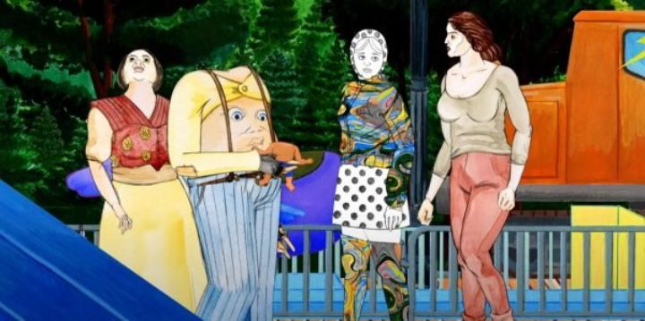

The first animated film I've watched from graphic novelest Dash Shaw was "My Entire High School Sinking Into The Sea." It did not leave a good impression on me. There were two things that irritated me about it: 1) Dash's visual style, like a fourteen-year-old's notebook drawing, was crude and ugly, and 2) I don't like high-school teenage coming-of-age comedy-dramas, and the movie was therefore of my least-favourite genre. I usually like to support these low-budget, limited-resource, indie animated, feature-length films, and I know to keep my expectations low, but this was one of the worst animated films I had ever seen. Even if Dash Shaw planned to make any more movies (and since it looked, based on production values, like the movie took less than a month to make, he probably would), I didn't plan to see any of them. I ended up watching his 2021 followup, "Cryptozoo," only because it was part of a online film festival and I had paid for an unlimited pass.Immediately, "Cryptozoo" is an improvement, if only because the genre is drastically different. And as an initial text explains, the movie is about "Cryptids," or mythical animals, not about the topical craze of crypto-currency and NFT's. The opening scene is of a pair of teenagers having drug-fueled sex in a forest in the dead of night, and then discovering a large fence nearby. Despite the girl's worries, she follows her boyfriend over the fence, and they discover a peaceful unicorn. By accident (and due to the man not staying away from the wild creature), the man is stabbed by the horn, and after injuring the unicorn but unsuccessful to save the man, the girl kills the creature, taking the horn as a prize while carrying her boyfriend's corpse. This opening was unadulterated, full of nudity, sex, drugs, violence and blood. Sure, the visuals are still terrible, like someone vomitted on lined paper and drew stuff in pencil around it. And the dialogue is still cringe-worthy, with teenage millennials speaking as though they had the IQ of a spoiled avocado. But the story was captivating: after this opening scene, we follow a separate, adult woman traveling the world to find the mythical dream-eating creature known as the "Baku," leading to an international sanctuary called the "Cryptozoo" with all manner of animals and monsters that shouldn't exist, and the quest for them to live peacefully outside with the rest of the world. It was like this was the movie Dash Shaw REALLY wanted to make, and that he started with a smaller, more accessible film just to prove to himself that he could, before starting what could be his defining work. I was mostly able to look past the bad visuals and questionable dialogue (which might arguably be more natural than other film speech, but still gross to listen to) to listen to the story and see where it was going. It's not all that easy though; there are still poor attempts at humor and character development that extend the runtime more than necessary, and true to the more "adult" audience this was intended for, there are unsavory side-characters that appear. In that opening scene, there's a mention about a dream of "storming the capitol and overtaking the government, to create a peaceful world," and I couldn't tell what the intent of the mention was; whether it was a joke or a sign of support, it was still poor taste (the infamous occurance in January 2021 in the USA was less than a year before the movie came out, proving that the film couldn't have taken much time in production). Things get interesting in the last arc, which turns into a horror disaster movie where some of these terrible characters die off. I'll mention again that the visuals don't look good. Experimental visuals can look better in movement, but the animation applied to this style almost makes everything look worse, not better. There are a few shots that overlay visuals in a way that's inspired from comics and that design language... "Cryptozoo" might have been better as a graphic novel than a film. Despite the script, the acting is better here too, perhaps because of the subject matter, and the choice to not use famous actors for the characters."Cryptozoo" is an improvement all around for filmmaker Dash Shaw, although it still suffers from his distinct weaknesses. The story and premise is the exclusive selling point. And the story ultimately isn't great either, but at least it's interesting throughout the full runtime.
- "Ani" More reviews can be found at : https://2danicritic.github.io/ Previous review: review_Cross_Ange_-_Rondo_of_Angel_and_Dragon Next review: review_Cutie_Honey_Universe